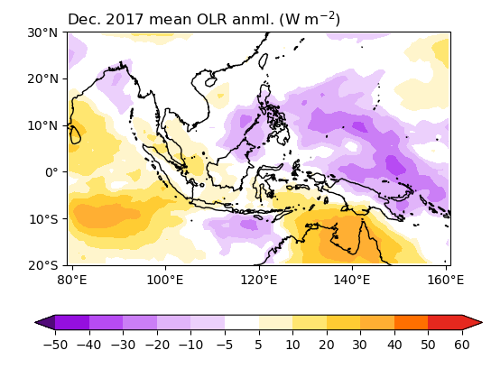
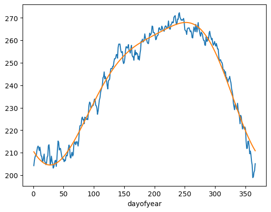

6. 計算氣候場及距平值#
進行氣候分析時，最常從分析氣候場 (Climatology) 和距平值 (Anomaly) 開始。
利用groupby計算月氣候平均與距平#
先準備資料。
import numpy as np
import pandas as pd
import xarray as xr
from cartopy import crs as ccrs
from cartopy.mpl.gridliner import LONGITUDE_FORMATTER, LATITUDE_FORMATTER
import matplotlib as mpl
from matplotlib import pyplot as plt
import cmaps
mpl.rcParams['figure.dpi'] = 100
# 選擇資料的時空範圍。
lats = -20
latn = 30
lon1 = 79
lon2 = 161
time1 = '2017-12-01'
time2 = '2017-12-31'
# 開啟檔案
olr_ds = xr.open_dataset("data/olr.nc")
olr = (olr_ds.sel(time=slice('1998-01-01','2016-12-31'),
lat=slice(lats,latn),
lon=slice(lon1,lon2)).olr)
olrrt = (olr_ds.sel(time=slice('2017-12-01','2017-12-31'),
lat=slice(lats,latn),
lon=slice(lon1,lon2)).olr)
我們在第4單元中，已經了解過如何在xarray中操控datetime物件，因此在計算氣候場的時候，也可以將資料按照各月分類，這種聚集並分類的函數稱為groupby。按照月份分類後，將同類的平均，就可以達到計算月平均氣候場的效果。
olrGB = olr.groupby("time.month")
olrMonClim = olrGB.mean("time") # 這邊的mean指的是幫groupby的各組平均，和第3章學的mean意義稍有不同。
olrMonClim
<xarray.DataArray 'olr' (month: 12, lat: 50, lon: 82)> Size: 197kB
array([[[270.46295, 270.7331 , 270.65665, ..., 257.25116, 256.66913,
255.8849 ],
[269.24954, 268.8672 , 269.106 , ..., 253.44592, 253.16605,
252.61195],
[267.06573, 267.1016 , 267.57956, ..., 249.2561 , 248.4184 ,
247.00943],
...,
[257.9647 , 257.92267, 258.25693, ..., 256.99445, 256.7958 ,
257.13882],
[253.88762, 253.44121, 252.49251, ..., 252.6739 , 252.67776,
252.66586],
[245.34576, 240.01846, 228.33456, ..., 248.65149, 248.66846,
248.49452]],
[[266.90402, 267.24286, 267.5611 , ..., 255.47617, 254.07542,
253.1878 ],
[264.35098, 264.73938, 264.88358, ..., 251.78018, 251.39395,
251.59006],
[261.4748 , 262.03244, 262.23868, ..., 247.40343, 248.10786,
248.63504],
...
[281.75525, 281.88843, 282.38974, ..., 263.41364, 263.98563,
264.83344],
[279.72992, 279.606 , 276.21066, ..., 257.44904, 258.60928,
259.01102],
[270.86935, 264.80884, 252.71701, ..., 252.37296, 253.24255,
254.25143]],
[[277.68835, 277.9624 , 278.4138 , ..., 268.97833, 268.33752,
267.38034],
[276.88388, 276.72455, 277.11646, ..., 267.85056, 267.2011 ,
266.11264],
[274.72495, 274.7343 , 275.10522, ..., 266.41324, 264.9135 ,
264.2871 ],
...,
[269.02094, 269.55533, 270.47006, ..., 258.97546, 259.5016 ,
260.03702],
[266.66284, 267.08347, 265.3553 , ..., 253.46599, 253.83997,
254.14189],
[258.7794 , 254.24704, 243.16266, ..., 248.40625, 248.42702,
248.41464]]], dtype=float32)
Coordinates:
* lon (lon) float32 328B 79.5 80.5 81.5 82.5 ... 157.5 158.5 159.5 160.5
* lat (lat) float32 200B -19.5 -18.5 -17.5 -16.5 ... 26.5 27.5 28.5 29.5
* month (month) int64 96B 1 2 3 4 5 6 7 8 9 10 11 12
Attributes:
standard_name: toa_outgoing_longwave_flux
long_name: NOAA Climate Data Record of Daily Mean Upward Longwave Fl...
units: W m-2
cell_methods: time: mean area: mean計算距平時，將即時(real time)的資料也對月份進行groupby，再直接減去氣候場即可，xarray會根據氣候場中的groupby分類進行計算。
olra = olrrt.groupby('time.month').mean() - olrMonClim
olra
<xarray.DataArray 'olr' (month: 1, lat: 50, lon: 82)> Size: 16kB
array([[[ 9.78244 , 9.909546 , 8.493408 , ..., 2.497589 ,
1.3457642 , -0.74990845],
[ 8.7960205 , 9.101654 , 9.233459 , ..., 0.71640015,
-0.6616211 , -2.1523438 ],
[ 7.6419373 , 9.022461 , 10.015717 , ..., 1.4698181 ,
-0.83166504, -3.696045 ],
...,
[-6.5422363 , -5.305298 , -6.9757385 , ..., 10.722809 ,
12.269043 , 13.60672 ],
[-5.522644 , -5.3371887 , -5.0463257 , ..., 7.494705 ,
8.715515 , 9.534042 ],
[-5.712723 , -4.664627 , -4.2814484 , ..., 4.3125763 ,
5.6015167 , 6.7983246 ]]], dtype=float32)
Coordinates:
* lon (lon) float32 328B 79.5 80.5 81.5 82.5 ... 157.5 158.5 159.5 160.5
* lat (lat) float32 200B -19.5 -18.5 -17.5 -16.5 ... 26.5 27.5 28.5 29.5
* month (month) int64 8B 12我們把資料畫出來看看。
from matplotlib import pyplot as plt
from cartopy import crs as ccrs
from cartopy.mpl.gridliner import LONGITUDE_FORMATTER, LATITUDE_FORMATTER
import cmaps
olr_anml_cmap=cmaps.sunshine_diff_12lev
proj = ccrs.PlateCarree()
fig,ax = plt.subplots(1,1,subplot_kw={'projection':proj})
clevs = [-50,-40,-30,-20,-10,-5,5,10,20,30,40,50,60]
olrPlot = (olra[0,:,:]
.plot.contourf("lon", "lat",
transform=proj,
ax=ax,
levels=clevs,
cmap=olr_anml_cmap,
add_colorbar=True,
extend='both',
cbar_kwargs={'orientation': 'horizontal', 'aspect': 30, 'label': ' ', 'ticks':clevs})
)
ax.set_extent([lon1,lon2,lats,latn],crs=proj)
ax.set_xticks(np.arange(80,180,20), crs=proj)
ax.set_yticks(np.arange(-20,40,10), crs=proj) # 設定x, y座標的範圍，以及多少經緯度繪製刻度。
lon_formatter = LONGITUDE_FORMATTER
lat_formatter = LATITUDE_FORMATTER
ax.xaxis.set_major_formatter(lon_formatter)
ax.yaxis.set_major_formatter(lat_formatter) # 將經緯度以degN, degE的方式表示。
ax.coastlines() # 繪製地圖海岸線。
ax.set_ylabel(' ') # 設定坐標軸名稱。
ax.set_xlabel(' ')
plt.title(' ')
plt.title("Dec. 2017 mean OLR anml. (W m$^{-2}$)", loc='left')
plt.show()

計算日氣候平均與距平#
和計算月氣候場類似，datetime物件有dayofyear的attribute，因此利用groupby('time.dayofyear')就可以計算氣候場。
olrGB = olr.groupby("time.dayofyear")
olrDayClim = olrGB.mean("time")
olrDayClim
olra = olrrt.groupby('time.dayofyear') - olrDayClim
計算「平滑」氣候場#
平滑氣候場是保留氣候場的前n個諧函數 (harmonics)，必須運用傅立葉變換 (fast Fourier transform, FFT) 計算。計算FFT需要用到scipy函式庫。然而由於scipy目前尚不支援xarray.DataArray，因此必須先轉換成numpy.ndarray才能進行FFT運算，或是利用xrft (Fourier transforms for xarray data)模組。下列程式碼smthClmDay函數和NCL完全一樣。
from scipy.fft import rfft, irfft
def smthClmDay(clmDay, nHarm):
nt, ny, nx = clmDay.shape
cf = rfft(clmDay.values, axis=0) # xarray.DataArray.values 可將DataArray 轉換成numpy.ndarray。
cf[nHarm,:,:] = 0.5*cf[nHarm,:,:] # mini-taper.
cf[nHarm+1:,:,:] = 0.0 # set all higher coef to 0.0
icf = irfft(cf, n=nt, axis=0) # reconstructed series
clmDaySmth = clmDay.copy(data=icf, deep=False)
return(clmDaySmth)
olrDayClim_sm = smthClmDay(olrDayClim, 3)
olrDayClim_sm
<xarray.DataArray 'olr' (dayofyear: 366, lat: 50, lon: 82)> Size: 6MB
array([[[273.80515, 274.10938, 274.2879 , ..., 261.79456, 260.94968,
259.96237],
[272.50842, 272.31113, 272.69553, ..., 259.65186, 259.05933,
258.1859 ],
[270.22046, 270.31717, 270.83304, ..., 256.96295, 255.90952,
254.99857],
...,
[260.15997, 260.5604 , 261.29028, ..., 257.65775, 257.77252,
258.23932],
[256.91174, 257.18835, 256.1388 , ..., 252.47044, 252.64952,
252.72316],
[249.13116, 244.76389, 233.80005, ..., 247.78957, 247.84799,
247.76077]],
[[273.66 , 273.9643 , 274.14062, ..., 261.4893 , 260.6607 ,
259.6891 ],
[272.35568, 272.1524 , 272.53165, ..., 259.30478, 258.74103,
257.90274],
[270.05838, 270.1501 , 270.6593 , ..., 256.57834, 255.56288,
254.67546],
...
[260.96295, 261.39435, 262.1524 , ..., 257.77435, 257.91217,
258.39255],
[257.7688 , 258.06982, 256.98972, ..., 252.51714, 252.7237 ,
252.81175],
[249.98839, 245.6104 , 234.62175, ..., 247.77896, 247.85405,
247.79375]],
[[273.94824, 274.25226, 274.4333 , ..., 262.10028, 261.23892,
260.23553],
[272.6587 , 272.46793, 272.85754, ..., 259.9982 , 259.37653,
258.46805],
[270.37982, 270.48196, 271.00443, ..., 257.34586, 256.2545 ,
255.32027],
...,
[260.5534 , 260.96948, 261.71365, ..., 257.7139 , 257.8402 ,
258.31378],
[257.33246, 257.6214 , 256.55753, ..., 252.49162, 252.68434,
252.76512],
[249.55336, 245.18178, 234.20656, ..., 247.78217, 247.84875,
247.77481]]], dtype=float32)
Coordinates:
* lon (lon) float32 328B 79.5 80.5 81.5 82.5 ... 158.5 159.5 160.5
* lat (lat) float32 200B -19.5 -18.5 -17.5 -16.5 ... 27.5 28.5 29.5
* dayofyear (dayofyear) int64 3kB 1 2 3 4 5 6 7 ... 361 362 363 364 365 366
Attributes:
standard_name: toa_outgoing_longwave_flux
long_name: NOAA Climate Data Record of Daily Mean Upward Longwave Fl...
units: W m-2
cell_methods: time: mean area: mean選取澳洲季風區，繪製氣候的時序圖。
nt, ny, nx = olrDayClim.shape
olrDayClim1 = xr.DataArray(data=olrDayClim.values,
dims=['dayofyear','lat','lon'],
coords=dict(dayofyear=range(1,nt+1),
lat=olrDayClim.lat,
lon=olrDayClim.lon))
olrDayClim_sm1 = xr.DataArray(data=olrDayClim_sm.values,
dims=['dayofyear','lat','lon'],
coords=dict(dayofyear=range(1,nt+1),
lat=olrDayClim.lat,
lon=olrDayClim.lon))
plt.figure()
(olrDayClim1.sel(lon=slice(115,150),lat=slice(-15,-2))
.mean(["lat","lon"])
.plot.line(x="dayofyear"))
(olrDayClim_sm1.sel(lon=slice(115,150),lat=slice(-15,-2))
.mean(["lat","lon"])
.plot.line(x="dayofyear"))
plt.show()

上圖藍線的部分為原始的氣候場，橘線的部分則是保留前三個諧函數的氣候場，縱軸為OLR，橫軸則是一年之中的天數。
Homework 2#
Homework #2
請以xarray開啟CMORPH降雨資料，繪製CMORPH降雨的月氣候場和月距平。
以
groupby計算降雨的daily climatology (1998-2020)，然後將5月做月平均並繪製五月降雨氣候平均地圖。計算CMORPH降雨的daily anomaly，將2022年5月1-5, 6-10, 11-15日分別平均起來繪製成侯 (pentad) 平均降雨地圖，以及侯距平 (pentad anomaly) 平均地圖 (有3侯，請畫6張圖)。
請根據所畫出來的地圖描述五月降雨氣候特徵，以及所選的3侯降雨有什麼樣的特色。
繪圖的範圍請限制在40˚~180˚E, 20˚S-40˚N。繳交的時候請上傳程式碼 (.py或.ipynb皆可)、圖 (總共7張圖) 和降雨特色的描述 (可以是Word, PPT, PDF格式)。